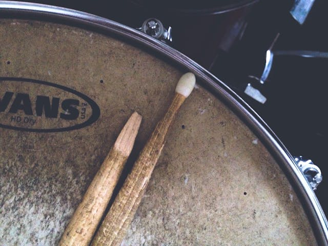

Legendäre Schlagzeuger der Musikgeschichte
Hier findest du Informationen zu Weltweit bekannten Schlagzeuger.
Ausrüstungsberatung
Hier findest du eine Beratung für die verschiedenen Accessoires, wie Drumsticks etc. die du brauchst.
Video
Hier findest du ein Video von einem Drum-Solo
Geschichte
Hier erfährst du etwas über die Geschichte des Schlagzeugs und Schlagzeugspiels.